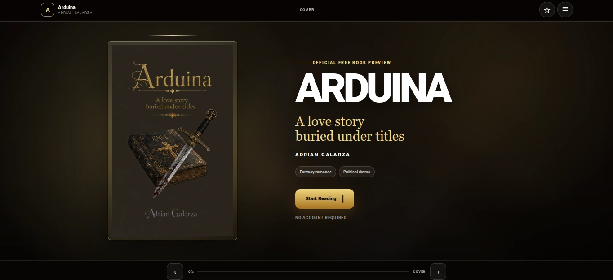
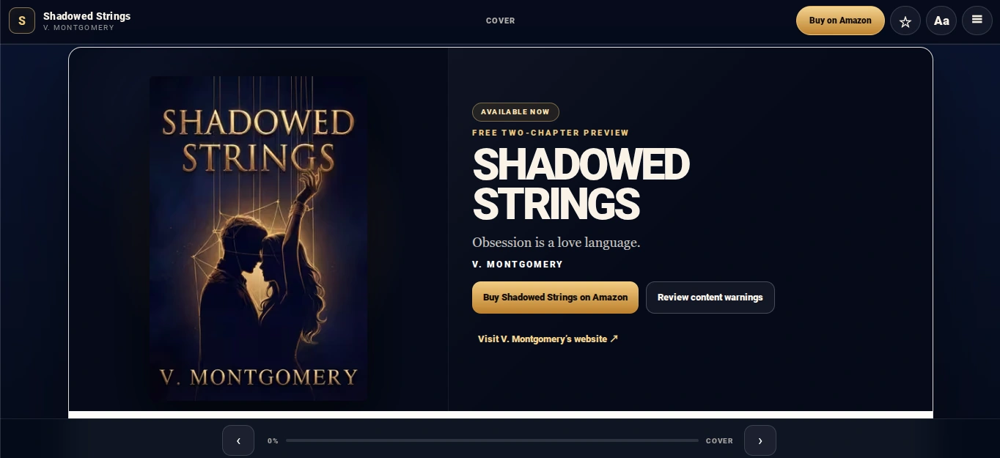
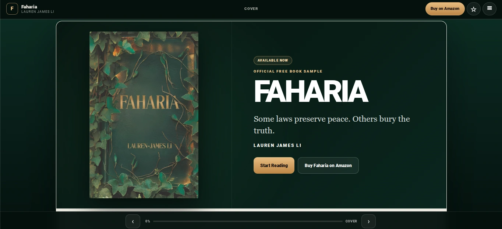
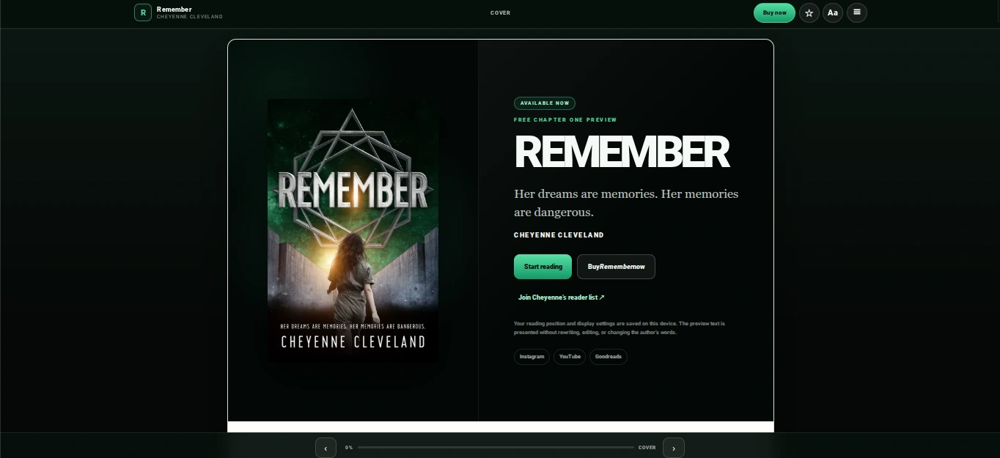

Book preview websites

Live client examples.

Book Preview Website
Read case study →
V. Montgomery
Personalised around Shadowed Strings.
Open live website →Read case study →


Book Preview Website
Read case study →
Cheyenne Cleveland
Personalised around Remember.
Open live website →Read case study →
Book Preview Website
Read case study →
Eileen Zarambik
Personalised around He Still Knows My Name.
Open live website →Read case study →
Author website work
Author-centred projects.
Cheyenne Cleveland
A dedicated author website connecting the author identity and books.
Open live author website →Baylee Breton
KRONATRIX author website client. The portfolio identifies the author without repeating the individual book title.